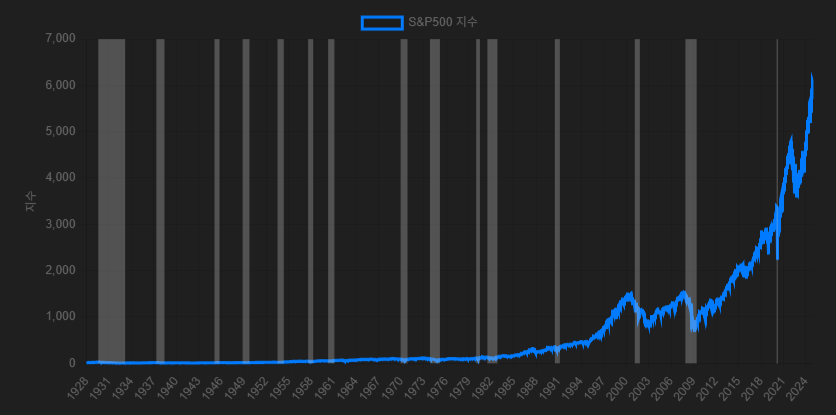
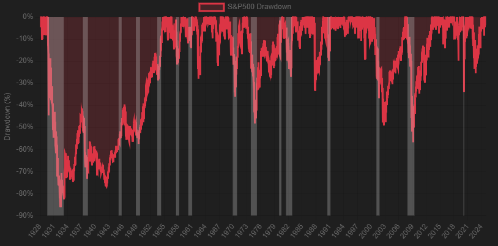

미국 경제는 지난 100여 년 동안 반복적으로 경기침체(Recession)를 겪어왔습니다. 이러한 리세션은 실물 경제뿐 아니라 자산시장에도 심각한 영향을 끼쳤습니다.
특히 S&P500 지수는 경기침체기에 큰 낙폭을 기록하는 경우가 많았으며, 때로는 반토막 이상의 손실을 기록하기도 했습니다.
본 보고서는 역사적 경기침체 사례를 통해 당시 S&P500의 반응을 정리하고,
회복까지의 과정을 함께 살펴봄으로써 장기투자자의 시사점을 도출합니다.
아래 차트는 미국 역사상 주요 경기침체 시기에 나타난 S&P500 지수의 최대 낙폭 (Drawdown)과 해당 지수의 흐름을 함께 보여줍니다.
 주요 관찰점:
리세션은 각기 다른 원인으로 발생합니다. 아래는 주요 리세션 사례와 함께, 원인 및 시장 반응을 간략히 정리한 표입니다.
| 시기 | 주요 원인 | S&P500 낙폭 | 회복 특성 |
|---|---|---|---|
| 1929~1933 | 대공황, 금융 붕괴 | -86.19% | 뉴딜 정책, 전쟁 수요로 장기 회복 |
| 1973~1975 | 오일쇼크, 스태그플레이션 | -42.17% | 인플레이션 통제와 성장 기반 회복 |
| 2007~2009 | 서브프라임, 금융위기 | -55.37% | 양적완화, 유동성 공급으로 회복 |
| 2020 | 코로나19 팬데믹 | -33.92% | 역사상 가장 빠른 회복 속도 |
경기침체는 두렵지만, 동시에 자산가격이 저평가되는 기회이기도 합니다.
역사적 데이터를 통해 우리는 리세션 이후 더 큰 상승장이 열렸음을 알 수 있습니다.
불확실성 속에서도 흔들리지 않는 투자자의 태도는 결국 시장의 보상으로 돌아옵니다.